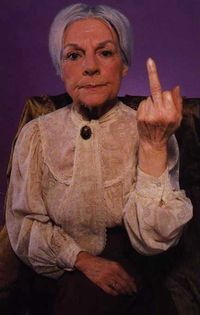

Abuela
 De: La Frikipedia, la enciclopedia extremadamente seria.
De: La Frikipedia, la enciclopedia extremadamente seria.
| De la serie tribus urbanas del mundo:
|
| Abuela
|
Ejemplo de la tribu

|
| Abuela respondiendo a sus nietos
|
|
| Hábitat
|
Residencias, sótanos, áticos, sillas mecedoras
|
| Inteligencia
|
Varía dependiendo el espécimen, desde la clásica con alzheimer que te confunde con tu hermana menor hasta los auténticos dinosaurios que se acuerdan de que comiste, como estabas vestido y a que olian tus pedos el día que rompiste el payasito de cerámica de tu mamá
|
| Frase favorita
|
¡Niño comete las lentejas!
|
| ¿Peligroso?
|
Bastante
|
| Obsesión
|
Las telenovelas
|
| Notas
|
Cuidado con las tuyas...
|
Se conoce como abuela a todo ser pegajoso, arrugado y medio calvo que huele raro. Normalmente vive en una cama, ven la telenovela durmiendo, y aunque tengan los senotones quitados, si tu cambias de canal ellas/os (es difícil de saber en algunos casos) se despiertan y te ordenan inmediatamente que vuelvas a ponerla. Algunos especímenes llevan unos extraños aparatos en las orejas a los que denominan comúnmente aparaticos, senotones o en su defecto cosas para la sordera.
Tipos de abuelas
Hay cinco tipos:
- Abuelita agradable: muy escasas. Son extremadamente simpáticas, hasta el aburrimiento.
- Abuela coñazo: no para, no para, no para de contarte cosas que no, no, NO TE INTERESAN!!!!! Suelen acabar empotradas contra una pared o en la acera, lo cual es triste porque en el fondo son seres humanos con corazón, sólo que EXTREMADAMENTE irritantes.
- Abuela hija de puta: le hace muchísima gracia la desgracia ajena, especialmente cuando la causante de la desgracia es ella misma.
- Abuela historietas: se caracteriza porque siempre cuenta una historia que nunca pasó... como el día que Hitler fue a saludar a su madre. También se las conoce por inventarse palabras como la motoreta (refiriéndose a una moto) y el burricán.
- Abuela despensas: son las que muy preocupadas pro el crecimiento de sus nietos se empeñan en atiborrarles de todas las comidas que puedan prepararse con la pensioncita del mes. Se empeña en llenar el plato una y otra vez, hasta que ven asomar la comida por la nariz de su nieto, y luego le saca a relucir un maravilloso postre formado por un flan del tamaño de una cacerola, con nata y caramelo. A la hora de despedirse de su nieto, desliza disimuladamente una morcillita en el bolsillo del chaquetón para que su nietecito no pase hambre por el camino, y encima te carga con una bolsa llena de fiambreras repletas de platos regionales para tu madre.
Frases universales de las abuelas
Bueno, todo el mundo tiene o ha tenido abuela, pero ¿nunca se han parado a escucharlas hablar? las abuelas tienen frases que les caracterizan de nosotros mismos y de las madres, aunque las madres a veces sueltan frases de abuela, a continuación véanse las siguientes frases y sus respectivos significados:
- dame el coso ese = dame tu Ds, Wii, la Play etc...
- Era menesté limpiar la mesa = hace falta limpiar la mesa (las madres también suelen decirlo)
- ¿Ya tas viendo otra véh el Goma espuma ese? (Mi abuela sobre BOB ESPONJA)
- ¡Qué disparáte! = que locura... que tontería
- ¿Podrías alcanzarme el oxígeno?
- Tate ahí = quédate ahí
- So guarra. (Hablando sobre la suciedad de la baranda de la vecina del quinto)
- ¿¡¡¡Siiee!!? = cuando le cuentas algo y te dice un ¿si? pero poniendo boca como si dijeras se
- Los pretendientes = los ligues
- ¡Que monería! = Que bonito!
- ¡Qué muñeco! = ¡qué guapo!
- Los niñacos = los niños tontos
- ¿estas enojada? = estas enfadada?
- ¿Te sa perdido? = ¿Se te ha perdido?
- Sa enojao con el novio = han cortao
- Ni merga = Mi Verga
- Gasta cuidaito = ten cuidao
- Nena, alargame el.... nene, alargame a... = acércame tal cosa o llévame a tal sitio (las madres también suelen decirlo)
- A er favó. = Haz el favor
- ¡Será penco...! = Será hijoputadesgaciaomaricon...
- Eres un molde de hacer peanas = Tienes más morro que espalda
- El ratón mikey = miki mousse (dato: mickey se pronuncia tal cual se lee)
- Traete una pokita de agua = tráeme un poco de agua
- Nena, coge la espontex mojá y le echas un chorrito de amoniaco la estrujas MU BIEN y le das MU BIEN. = el mito del trapo humedo (las madres lo dicen tambien)
- No señó! = cuando le pides algo y se enfadan te dicen no!
- Eso no esta bonito = Eso esta muy mal
- La niña é un elemento = que traviesa es la niña...
- Tu tiene mu poquísima vergüenza = que cara tienes...
- Tu dí que si = cuando tu madre no te deja hacer algo y tu abuela te da permiso o te da la razón te dice eso
- Digo esto esta mu bien, no?? digo pa lo que me ha costao = cuando se han comprado algo que no les convence mucho e intentan autoconvencerse
- Qué apañá, señó!! = dios mio que trabajadora es la niña
- Tú te tiene que echa un pretendiente trabajadó, de buena familia y mu buena persona, si no es así, a los hombres no hay que quererlos, no señó!
- No se dice "eso es mentira" se dice "eso no es verdá" = piensan que eso es mentira no está bonito decirlo.
- Cuando hablan con animales domésticos como perro o gato, dirán palabras como: Zapé! Leñe! Chito! Misi! significan indistintamente ven o vete, depende la agresividad del tono.
- ¡Esta juventud! = Cuando tratan de meterse con la forma de actuar, pensar o ser de la gente que tiene como mínimo 2.435 años menos que ell@s
- Te veo má repuesto = Se nota que no te falta de comer
- Estás desmejorao = Cuando tras un periodo de tiempo no se acuerdan de tu cara y estás más delgao y guap@
- ¿Queréis argo?, tengo pikachos en el armario = Coged frutos secos y seguid haciéndome compañía"
- ¿Y tú de quién eres? = Frase para saber si la gente que te rodea es de buena o mala calaña y contar historias sobre el tatarabuelo que ni siquiera era del pueblo en paz descanse
- Neno, estas todo el día en la motoreta
- ¡Que hace frío/calor!= Forma de referirse al día más cálido del invierno o al más fresco del verano.
- Jajajaja ¡Que trapalleiro!= Cuando alguien le hace reír
- La juventú, p'arriba, p'arriba, y nosotras, p'abajo, p'abajo.
- Si quieres saber, compra un viejo.
- Esto en mi época no pasaba.
- ¡Que veleta eres!= "¿eres una puta loca vendida! como vas a salir asi?!
- ¿Ha virsto esas ramerá?=no imites a tu hermana.
- Me voy a casar con un Velocirraptor.
Algo muy destacable de las abuelas es que tienen la ideología de que ser extranjero es una enfermedad, es decir, piensan que están sordos, y para que estos les entiendan hay que gritarles
Tienen por ley no decir ninguna palabra bien en un idioma extranjero
Algunas palabras extranjerizadas
- niño, deja ya la belinboi (refiriéndose a la game boy)
- Sabias que tu hermano se compro una jaeyei? (refiriéndose a una harley)
- hoy de cenar vas tomar pisa
- ¿Vas a ver al cine jarri poter (o gilipoter)?
- Esas dos son libianas(lesbianas)
- Brasil esta al lado de portugal ¿no? como ablan igual
- Como era rojo en ingles? Era ridt noo?
Problemas de confusión de las abuelas
Abuela en una excursión del inserso
- ¡Ay que hermoso! (Frase que suelen soltar cuando se les presenta a un niñ@ en la calle larga de Jerez y no saben que decir) - Mire señora (hay que ser educados), esa personita no es que sea hermoso, es que esta GORDO, por favor, no confundamos términos, sino sabes que decir diles que eres muy mayor y que tu vista no es lo que eras.
- ¿Quieres comer? - Mire, una cosa es comer, y otra es cebar, porque usted a su nieto lo ceba y esto implica que cuando esté abandonando casi la adolescencia va a ser motivo de las burlas de sus compañeros y obtendrá motes del tipo: "Bombete", "Culo-manteca" o simplemente "Gordo"(y no hermoso)
Las Abuelas VS La tecnologia
según ellas esas cosas que destruyen las mentes de los jovenes, y los dejan muy bobos, que como ellas dicen
en comparación con su época (que mejor no preguntárselo, porque el tipo de respuesta puede variar, según su falta
de memoria o su irritabilidad ) que en su época era mejor, si tanta cosa rara que inventan de por ahi
Abuela intentando entrar al
facebook después de ver que sus nietos que hablaban mucho de eso
Abuelas Famosas
Archienemigos de las abuelas
Hábitat de las abuelas
Abuela entrenandose para un viaje del incerso
- El hábitat común de la sub-especie abuelis domesticus es la casa de los hijos donde su actividad principal es hacerle la vida imposible a los nietos.
- Las abuelis solitarium habitan en casas medio derrumbadas, no suele levantarse de la cama y/o el sofá y se alimentan principalmente de telenovelas. Su actividad principal es criticar a las familias (especialmente los nietos) por no ir a visitarlas.
- A veces las abuelas se reúnen en manada en lugares de reunión comúnmente conocidos como residencias de ancianos, donde agentes del gobierno les lavan el cerebro a cambio del dinero de sus hijos. Éstas tienen la misma actividad principal que las anteriores y también jugar al bingo y juegos de mesa y realizar ataques periódicos al mundo exterior conocidos como: excursiones del inserso.
- Existe también un cuarto tipo, la abuelis travelus, que se dedica a aprovechar la vejez y la pensión para viajar a cualquier parte. El 70% de su tiempo lo pasan en un medio de transporte y el resto mandando regalitos horrendos a sus nietos (pero lo peor es cuando vuelven a casa).
Cualquiera de las especies anteriormente expuestas son potencialmente peligrosas y se deben evitar.
Además ciertos individuos gustan de ir cada 7 días a antros llenos de incienso a escuchar a tipos con un vestido negro e ingerir carne y sangre humana. En la jerga abueril esto se conoce como: ir a misa.
Métodos de ataque de las abuelas
- Pellizcos en los mofletes
- Abrazo de oso (al estilo pressing catch)
- Los besos de la muerte
- El cebón (obligar al nieto a comerse una tarta de chocolate y luego preguntarle si quiere postre o similar)
- Destrucción de propiedad ajena (preferiblemente en forma de apuntes y notas)
- Criticar al nieto delante de sus amigos y/o novi@
- Contar anécdotas vergonzosas del nieto a sus amigos y/o novi@
- Contar su vida (esta es considerada crimen de guerra)
- Contar su vida por teléfono (esta es aun peor)
- Contar detalladamente su historial médico
- Sembrar el caos con discusiones familiares
- Atizar con el bolso lleno de pedruscos (Contundente +25)
- Darte un beso y se te quede su dentadura en tu moflete
- Llamarte por teléfono para decirte que está mala y que le digas lo que le pasa en vez de llamar al médico
- Amarrarte el brazo
- Para darle masajes en los pies (AJJ)
- Hipnotismo
- Los besos de metralleta(sueltan unos diez besos en cada mejilla)
Situaciones con abuelas que deben ser evitadas
- Encuentro frontal en un supermercado. Sobre todo si te llevas los últimos yogures o helados que se derriten en 2 horas, deberás tener sumo cuidado con su fuerte brazo y las cuarcitas de su bolso.
- Acariciar al perrito de una abuela. Tras la frase de "no toques a mi perro", acudirá como rinoceronte en celo
fan a sacudirte con el ya mencionado bolso come piedras.
- Encuentros por la calle, bajo una cornisa en un día lluvioso. La abuela evitará a toda costa que su paraguas para 5 personas se moje, bajo serio peligro de que te ahogues, puesto que tu no llevas ese bien tan preciado que es el paraguas.
| Tribus Urbanas
|
 Universales Universales
 Españolas Españolas
 Argentinas Argentinas
 Chilenas Chilenas
 Colombianas Colombianas
 Mexicanas Mexicanas
 Peruanas Peruanas
 Venezolanas Venezolanas
|
Autor(es):
- Krusher
- Fordus
- Haakjvork
- SITORELOADED
- Doctor grijander
- Aque
- Epikurolibre
- Roms
- Rubenyn
- Khazike Khashondo
Frikipedia 2005-2016, Licencia
GFDL 1.2 - Extraído por FrikiLeaks